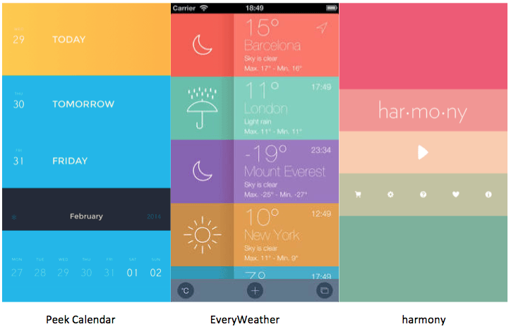
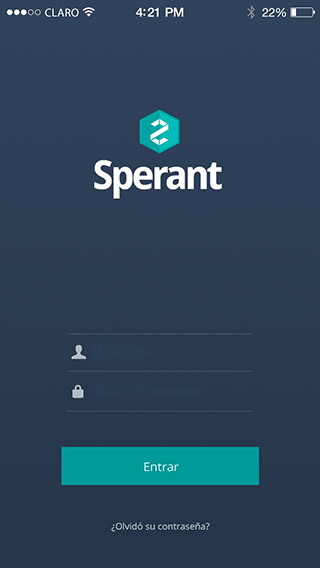
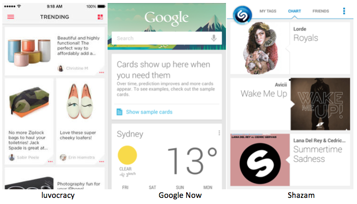
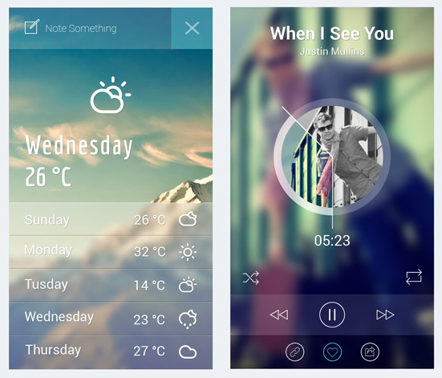
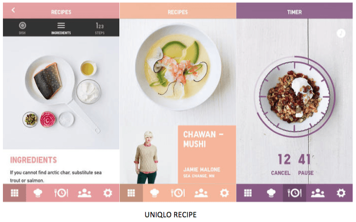
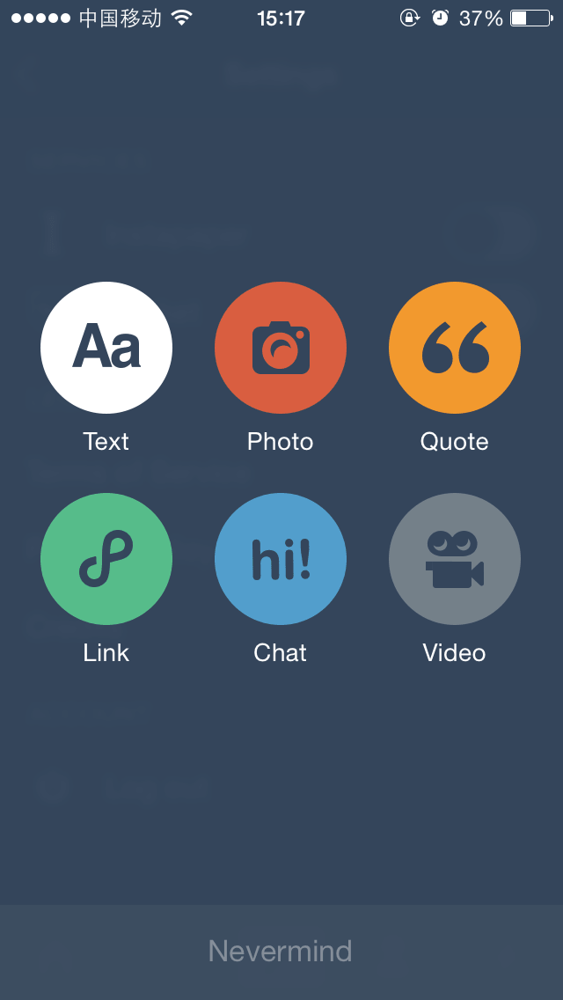
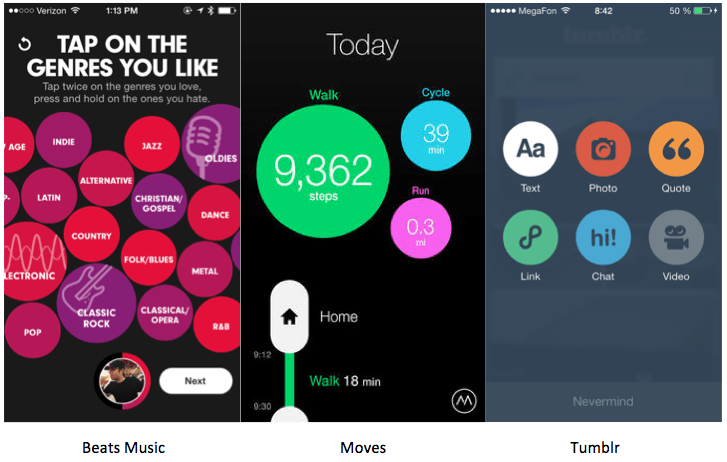

By: 卓文理
看看今年手机端比较流行的设计风格是什么？



不同的卡片都遵循在一个统一宽度和样式的卡片内，进行发挥和设计。既保证了卡片和卡片之间的独立性，又突出了内容本身。

用通栏的图片作为背景，也成为今年的一个流行趋势，或者是作为整个页面的背景，或者是作为内容区块的背景，既提升了视觉表现力度，又渲染出氛围 。

明确的导航设计，可以增强用户的体验，让用户直接在主界面就可以看到对应子界面中的信息，减少用户盲目的操作。用户能很方便的回到主界面或其他地方，因此导航上的每个操作对用户来说应是符合逻辑的，用户能够较容易了解它要表达的信息与情感。


圆形是最容易让人觉得舒服的形状，尤其是在充满各种方框的手机屏幕内，增加一些圆润的形状点缀，立刻就会增加活泼的气息，徒增好感。移动界面运用圆形选项按钮来设计，让选择变得专注而明确，又不刻板老套。
当然，还有很多...
移动端的设计根据不同产品和具体情境，设计要进行灵活变化。核心原则就是从用户出发，充分考虑用户体验。
众所周知，手机端是近期才开始发展。所以没有一些历史遗留的兼容性bug(如PC的IE6，7，8)，就连微软都宣布WP8.1开始兼容webkit前缀了。
当然，Android碎片化，与IOS差异等等的问题仍然相当蛋疼。
不过，可以尽情的时候HTML5，CSS3就是件开心的事儿~
有，介个
介个
还有介个
表单元素
今年6月份的时候，Google 发布了一个新的设计规范 Material Design。
当然，是需要翻墙滴~万恶的GFW~
看了那么多的DEMO，有什么感受？
好玩？有意思？舒服？
没有做不到，只有想不到！
我认为一个好的设计应该是让产品易用，有效而且能让人心情愉悦的东西！
谢谢观看 :)
请使用空格键或者方向键浏览